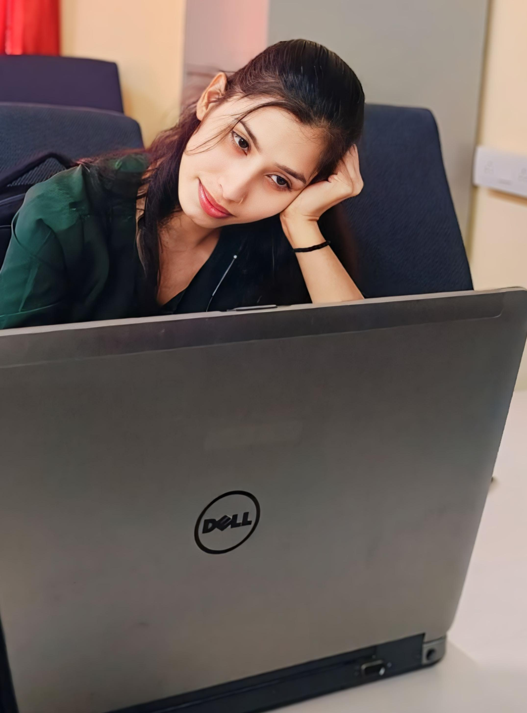

About Me

Hi, I’m Shail Pathak, a passionate tech enthusiast with a B.Tech in Electronics and Communication Engineering. Below is a brief overview of who I am and what I do:
- Technical Expertise: Python, C++, data structures, Linux, cloud computing, and front-end web development.
- Projects: Weather measurement website, responsive portfolio, and a music player.
- Cybersecurity Experience: Internship at CDAC NIT Silchar involving network packet analysis and digital signature creation.
- Certifications: Software Testing and Advanced HPC & Cyber Security.
- Interests: Exploring historical sites, meditating, and practicing yoga.
- Current Goals: Mastering Python and improving communication skills.
Thank you for visiting my portfolio. Feel free to explore my work or reach out to collaborate!